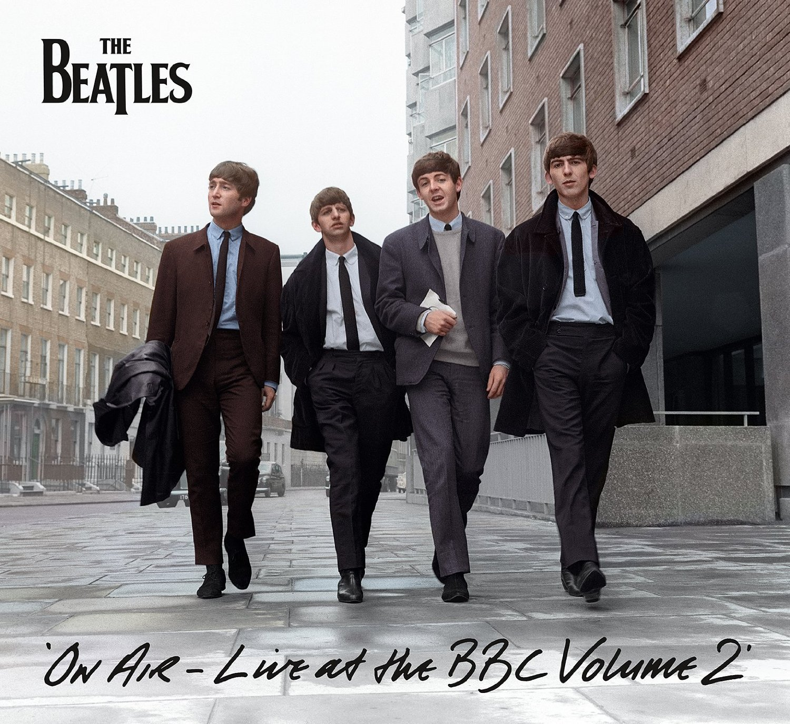
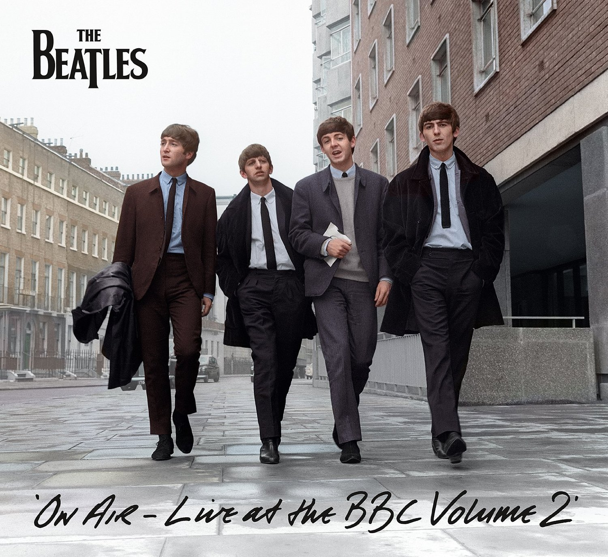

Історія гурту
The Beatles – британський рок-гурт із Ліверпуля, заснований у 1960 році. Вони стали справжньою музичною революцією ХХ століття. Музика гурту поєднувала елементи рок-н-ролу, поп-музики, психоделії та класичних оркестрових аранжувань. Вони змінили уявлення про сучасну популярну музику і стали однією з найвпливовіших груп усіх часів. За свою кар’єру The Beatles продали понад 600 млн копій альбомів у всьому світі.
Формування: У 1957 році Джон Леннон створив гурт "The Quarrymen". Згодом до нього приєднався Пол Маккартні, а трохи пізніше – Джордж Гаррісон. Остаточний склад сформувався у 1962 році, коли місце барабанщика зайняв Рінго Старр. Тоді гурт підписав контракт з лейблом "Parlophone" і випустив свій дебютний сингл "Love Me Do".
У 1964 році розпочалася "Бітломанія" – шалена хвиля популярності по всьому світу. Вони випустили культові альбоми "Revolver", "Sgt. Pepper's Lonely Hearts Club Band", "Abbey Road", які назавжди змінили історію музики. У 1970 році гурт офіційно розпався, але кожен учасник продовжив сольну кар'єру.
 
